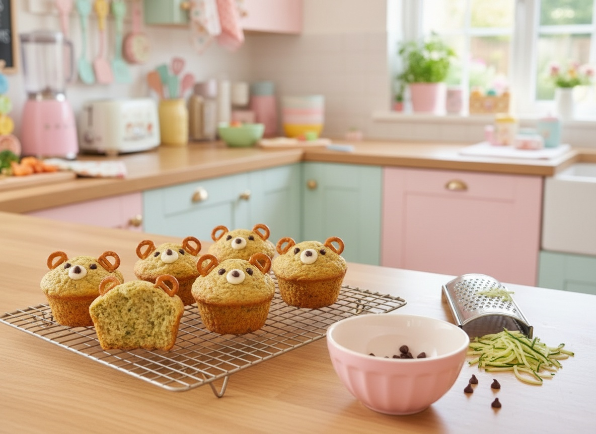

Teddy Bear Bites
Zucchini muffins that look like teddy bears

Hidden veggie: zucchini
Ingredients
- 1 cup grated zucchini, squeezed dry
- 1 1/2 cups whole wheat flour
- 1/2 cup brown sugar
- 1/3 cup vegetable oil
- 2 eggs
- 1 tsp cinnamon
- 1 tsp baking soda
- 12 mini chocolate chips (for ears and nose)
- 24 mini pretzels (for ears)
Steps
- Mix the wet ingredients (zucchini, oil, eggs) in one bowl.
- Whisk the dry ingredients (flour, sugar, cinnamon, baking soda) in another.
- Combine gently, then fill a muffin tin two-thirds full.
- Bake at 350°F (175°C) for 18 minutes, until a toothpick comes out clean.
The 3-Step Cuteness Rule
- Once cooled, push two mini pretzels into the top for bear ears.
- Add three chocolate chips for the eyes and nose.
- Pipe a tiny dot of frosting for the muzzle before adding the chips.
Penny's Notes
These are my Bento Box MVP — bake a batch on Sunday, freeze them, and you have five days of "Mommy, can I have a bear?" ready to go. The pretzel ears stay crunchy even after freezing, which is basically a miracle.
“If it's cute, they'll eat it. Promise!”